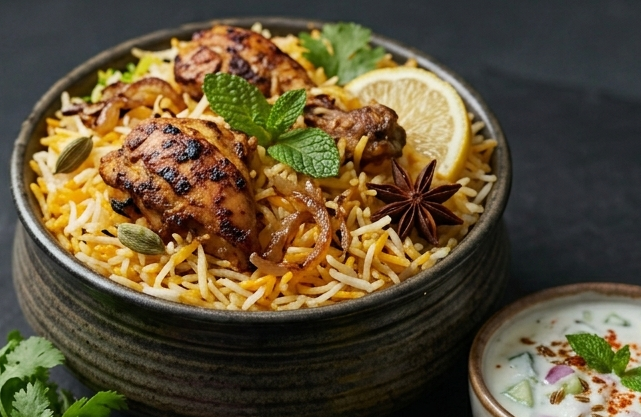

Chicken Biryani is far more than a simple rice-and-meat dish; it is a layered, aromatic institution that defines celebration and comfort across the Indian subcontinent. At its heart, the dish is a study in contrast and harmony: fragrant, long-grain basmati rice is parboiled with whole spices like cardamom, cinnamon, and bay leaf, while bone-in chicken is marinated in a piquant blend of yogurt, ginger-garlic paste, red chili, and garam masala. The real magic, however, lies in the assembly and the "dum" cooking method. The chicken and rice are carefully layered in a heavy-bottomed pot—often interspersed with fried onions (birista), fresh mint, saffron-infused milk, and a squeeze of lemon—before being sealed with a tight-fitting lid, sometimes secured with a ring of dough. As the pot sits over a low flame, the steam builds pressure, forcing the spiced juices of the chicken upward to perfume every individual grain of rice while the chicken below slow-braises into a state of profound tenderness. The result is a mosaic of colors and textures: fluffy, separate grains of rice giving way to the deeply savory, fall-off-the-bone meat below.
The experience of eating Chicken Biryani is inherently theatrical and communal. When the seal is broken tableside, the release of steam carries a heady, complex aroma that immediately signals something special. It is rarely served alone; a proper presentation demands cooling accompaniments to temper the rich spices—a side of cucumber and onion raita to provide a creamy, tangy respite, and a hard-boiled egg nestled within the rice as a prized, velvety bonus. The hallmark of an expertly made biryani is the prized "katchi mirch" (whole green chili) hiding within the layers, offering a sudden burst of fiery heat. Whether it is the subtle, refined flavors of a Lucknowi-style biryani or the bolder, more peppery bite of a Hyderabadi version, the dish transcends mere sustenance. It is a centerpiece for gatherings, a relic of royal kitchens, and a culinary labor of love that transforms the mundane act of cooking rice and chicken into a fragrant, unforgettable feast.